PLACES TO VISIT
The north Indian city of Varanasi, or Benares, is regarded as sacred by Hindus, Buddhists and Jains. Situated in the fertile Ganga valley and on the banks of the Ganges, Varanasi is a place of pilgrimage for Hindus, who come to bathe in the holy river. Known as the City of Temples and a beacon of culture, Varanasi has produced many renowned writers. It’s also a centre of silk weaving, so practice haggling at the chaotic bazaar for some beautiful souvenirs. Rickshaws are the best way to get about.
The land of Varanasi (Kashi) has been the ultimate pilgrimage spot for Hindus for ages. Hindus believe that one who is graced to die on the land of Varanasi would attain salvation and freedom from the cycle of birth and re-birth. Abode of Lord Shiva and Parvati, the origins of Varanasi are yet unknown. Ganges in Varanasi is believed to have the power to wash away the sins of mortals.
1. KASHI VISHWANATH TEMPLE

One of the oldest, richest, and holiest shrines of India is located in the sacred city of Varanasi and is known as Shri Kashi Vishwanath Temple. Named Kashi, due to the ancient name of Varanasi, the glorious temple commemorates the mighty Lord Shiva and is a part of the 12 Jyotirlingas. Thousands of devotees travel from miles away to witness its soothing spiritual ambiance and seek blessings from their god. Sun glistens on the towering spires and domes made out of pure gold.

As you walk through the gates, you can hear the soft rushing sounds of river Ganges nearby. Miniature shrines of various Hindu deities encircle the main hall of Sabha Griha. And at the heart of this hall, standing on a silver platform is the magnificent brown stoned effigy of Lord Shiva. Having braved the ravages of cultural wars, this temple has been demolished and reconstructed many times. Hence, this temple is not only an eminent pilgrimage site but also a prominent historical landmark.
Distance from Varanasi: 5.3 Km
Best Time to Visit: Shivratri and Rangabhari Ekadashi
2. TULSI MANAS TEMPLE

Pearly white facade greets the eyes as one walks through the lush green gardens of Tulsi Manas Temple. Constructed in 1964 by the Thakur Surekha Das family, the marble structure of this temple is renowned for its mesmerizing architecture. Believed to be the site where the ancient poet Tulsidas sat to pen down the holy epic of Ramcharitmanas, this temple is now one of the most revered religious places to
Symbolizing the grace and simplicity of the Hindu religion, Tulsi Manas Temple celebrates the glorious journey of Lord Rama and his wife, Goddess Sita. Intricate carvings depicting the scenes from Ramayan form the colorful murals lining the inner walls. During auspicious festivals, tales from Ramcharitmanas are narrated through puppets by local performers.
Distance from Varanasi: 6.7 Km
Best Time to Visit: Monsoon season, from June to August
3. MONKEY TEMPLE (DURGA TEMPLE)

Monkey temple is dedicated to Goddess Durga and was constructed in the 18th century by the Queen of Bengal as a center of devotion. The temple is known to be guarded by monkeys, which can be even fed by the devotees. It also has a kund that is known to be connected to Ganga, and its water is known to have therapeutic properties.
This temple is a must-visit place in Varanasi if you wish to seek the blessings of Goddess Durga, who is known to be the principal deity of this temple. The prayers and bhajans that are chanted in this temple make its aura extremely blissful.
Distance from Varanasi: 6.6 Km
Best Time to Visit: Morning
4. ISKCON TEMPLE
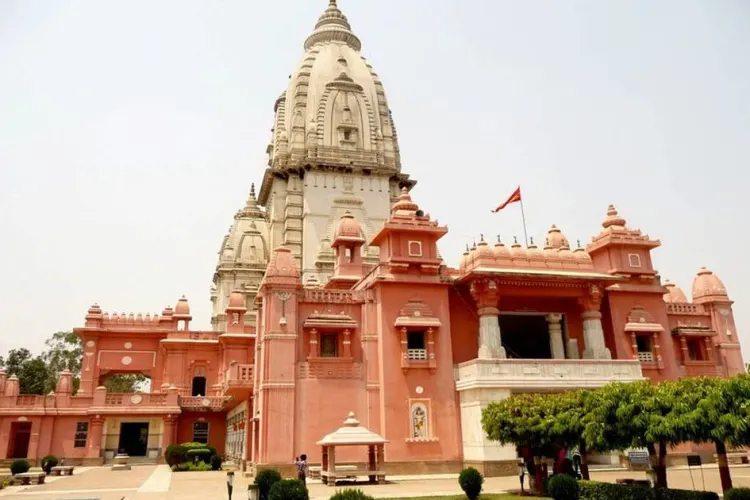Pearly white shikhara overlooks the entrance of the temple as you enter in the divine ISKCON temple of Varanasi. Built-in the year 1966, this shrine is a chain of Vaishnavite temples constructed by the International Society of Krishna Consciousness (ISKCON)and is revered to be one of the best places to visit in Varanasi. Said to be the devout followers of Lord Krishna, this congregation devotedly worship and spread the teaching of Lord Krishna mentioned in the Hindu epic of Bhagwat Gita.
The voice of cymbals beating together can be heard as the crowd gathered inside dance merrily. Chants of 'Hare Rama Hare Krishna' echo in the hall as hundreds of devotees pray to seek the blessings of their god. The idols of Lord Krishna and Sita are placed at the center and beautifully decorated with flowers, ornaments, and fabrics.
Distance from Varanasi: 6 Km
Best Time to Visit: Janmaashtami Festival
5. BATUK BHAIRAV MANDIR/TEMPLE

Batuk Bhairav Mandir is renowned for having the idol of child incarnation of Lord Shiva. Hidden in the crowded lanes of Varanasi, this little temple is frequented by religious sects of Tantriks and Aghoris and gives you a chance to acquaint yourself with the austere life they choose for their devotion. As you walk towards the temple, you will spot many dogs loitering near the place.
As a dog is the Vahan, or mythological carrier, of Batuk Bhairav, these dogs are also treated as sacred. Inside the temple, you will spot devotees chanting hymns as they offer flowers and sweets to the idol. As the god is worshipped in his child form, some people present toys and candies as offerings to the Lord. An eternal flame, or Akhand Jyoti, burns inside the shrine, which is said to have healing powers.
Distance from Varanasi: 4.4 Km
Best Time to Visit: Summer season but should be avoided during rainy weather
6. NEPALI TEMPLE
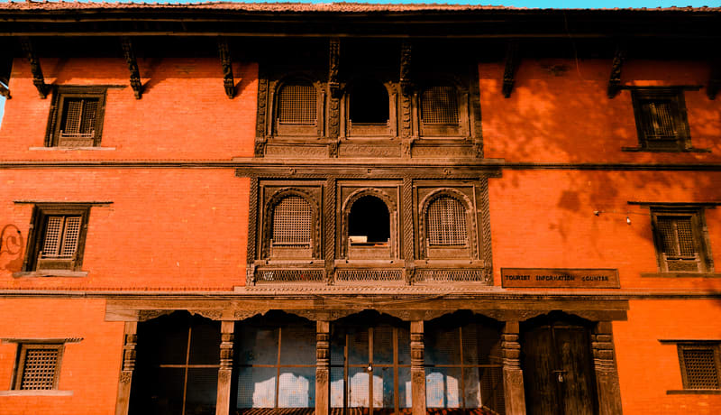Two-tiered roof, giving a touch of Buddhist architecture, forms the orange facade of the Nepali Temple of Varanasi. The temple has been named so as it was constructed by the Nepali ruler Rana Bahadur Shah when he visited this pilgrimage city during his exile. Despite its Pagoda styled structure, this temple is a Hindu shrine worshipping Lord Shiva and is a reproduction of Kathmandu's renowned Pashupatinath Temple.
Nestling peacefully amidst fragrant tamarind and peepal trees, this shrine houses a small linga, or effigy, of Lord Shiva. Hundreds of pilgrims and tourists visit this temple every year to seek the blessings of the god. With walls of terracotta and stone and terrace made out of wood, the structure took almost 30 years to complete. Due to the sculptures erected inside its complex, the temple also goes by the name of 'Mini Khajuraho.
Distance from Varanasi: 5.7 Km
Best Time to Visit: Mahashivratri and Nag Panchami
7. SANKAT MOCHAN HANUMAN TEMPLE
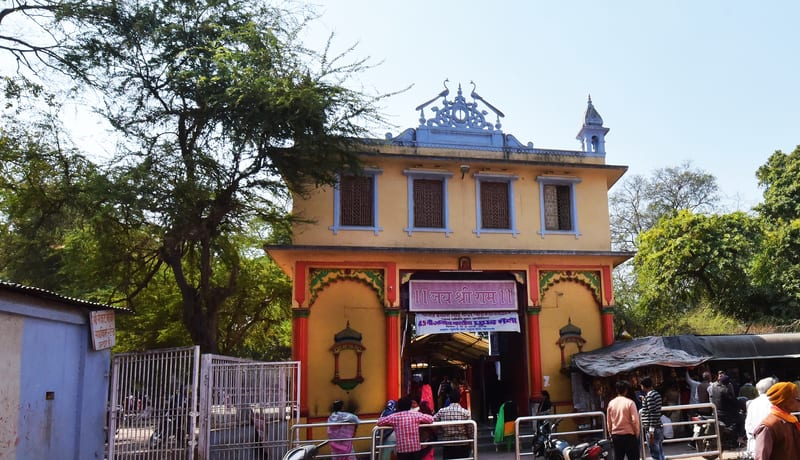Local folklore believes that once saint Tulsidas, the revered poet, was taking a stroll when he suddenly had a vision of Lord Hanuman. Taking this to be a sign, saint Tulsidas built a temple at the very spot and proclaimed that anyone who prayed with full devotion at this shrine would receive the blessings of the Lord. Said to be the rescuer in times of turmoil, the Sankat Mochan Hanuman Temple is located near River Assi and worships the mighty Lord Hanuman.
Bells ring melodiously as devotees chant the hymn of Hanuman Chalisa to express their devotion. Fragrant marigold flowers are adorned on his beautiful idol. Sweets like ladoos are offered to the idol and later served to the pilgrims as the blessed food of god.
Distance from Varanasi: 7.8 Km
Best Time to Visit: Tuesdays, October (especially during the festival of Diwali)
8. BHARAT MATA MANDIR/TEMPLE
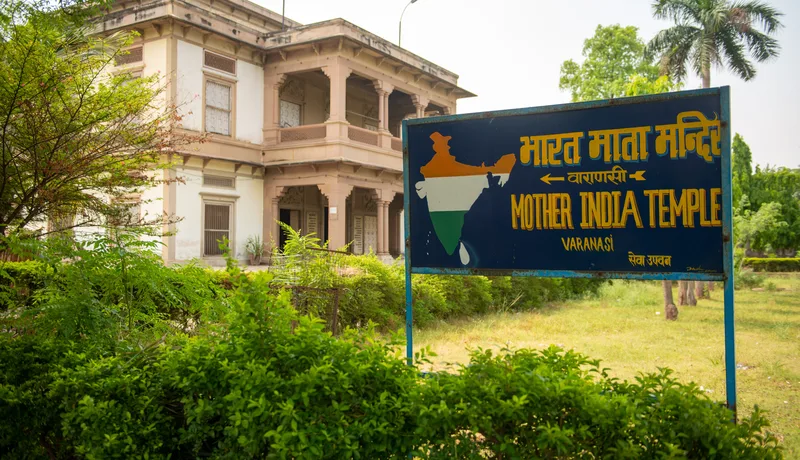The construction of Bharat Mata Mandir marked an important chapter in the glorious history of Indian Independence. Sadly, not many are aware of this architectural marvel. Built-in six years and inaugurated by Mahatma Gandhi himself, this Hindu temple enshrines Bharat Mata or Mother India. It is present inside the complex of Mahatma Gandhi Kashi Vidyapith, an esteemed university of Varanasi. But what makes it different from the rest? It is that this temple does not worship any Hindu deity.
Rather, it worships the country of India. Hence, when you enter the temple, you will find only a painting of Bharat Mata and no other idol or effigy. The highlight of this structure is the map of India sculpted out of solid marble. Depicting the map of India when it was undivided, it shows all the topographies enclosed by the subcontinent. The depressions depicting water bodies are filled with actual water. On the other hand, the peaks and ranges are lifted like spikes. On special occasions, the map is adorned with flowers. This temple was built to celebrate the spirit of independent, undivided and fearless India.
Distance from Varanasi: 2.9 Km
Best Time to Visit: Independence Day and Republic Day
9. GYAN VAPI WELL MANDIR/TEMPLE
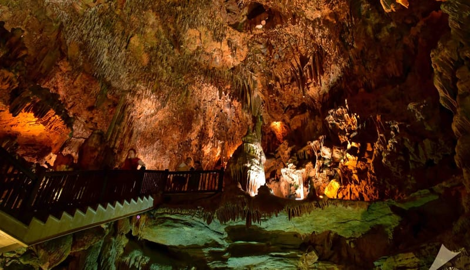Located in the middle of the Gyanvapi Mandir and Kashi Vishwanath Temple, this holy well is a popular pilgrimage site in Varanasi. Literally meaning the well of knowledge, Gyan Vapi Well is visited by many Hindu devotees for many years.
During the invasion of the temple by Emperor Aurangzeb, the effigy of Lord Shiva was carefully hidden by a priest inside this well. Since then, the waters of this well have been considered as sacred as river Ganga.
Distance from Varanasi: 5.7 Km
Best Time to Visit: Fridays
10. SITA SAMAHIT STHAL
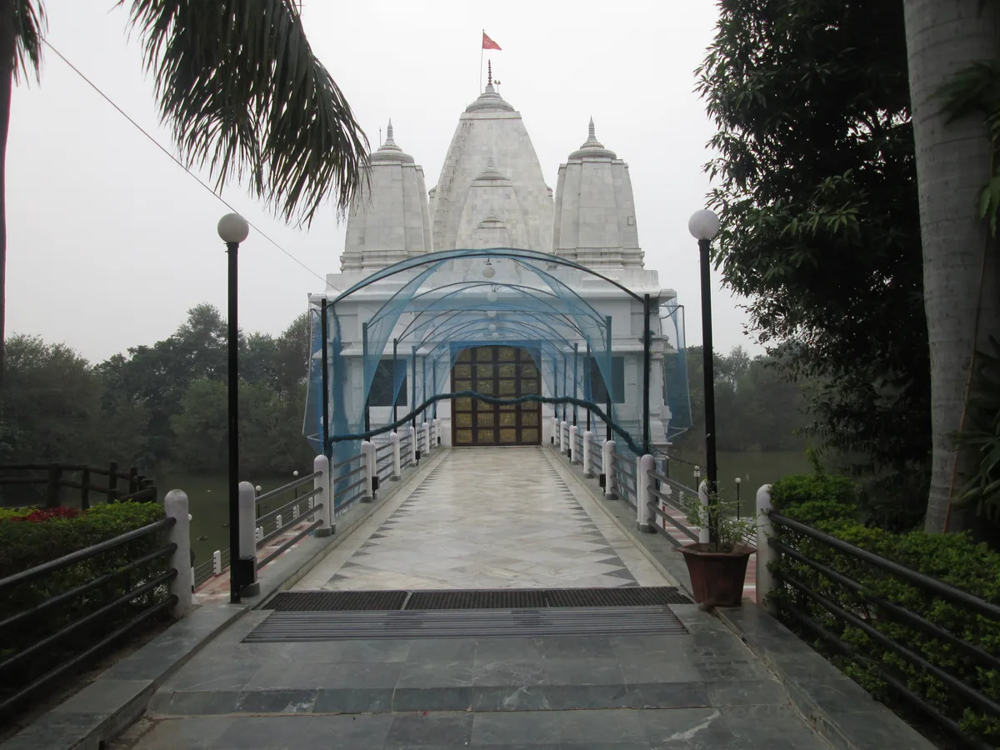A beautiful lake surrounds the periphery of the pristine white edifice forming the enchanting landscape of Sita Samahit Sthal. Not only is it an eminent pilgrimage site, but it is also a remarkable tourist attraction. Lying on the route from Varanasi to Prayagraj, this temple holds huge importance in Hindu mythology. Its origin is the etymology behind its name.
Legend says that this temple is built on the place from where Goddess Sita prayed Mother Earth to descend into her lap and disappeared into the ground. Hence, the main deity of this temple is Devi Sita, the wife of Lord Ram. You can also spot a tall statue of Lord Hanuman erected inside the complex.
Distance from Varanasi: 78.5 Km
Best Time to Visit: Ram Navami
11. SARNATH STUPA
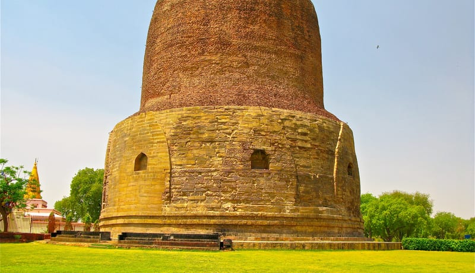Popular by names like Isipatana and Mrigadava, Sarnath is a distinguished pilgrimage site for Buddhists all over the world. Believed to be the first place Gautum Buddha went after gaining enlightenment to preach his teachings on Dharma, is this small, quiet, peaceful town. With many stupas built amidst lush green gardens, this city is famous for being the site of India's national emblem, the Ashoka pillar.
The charming Buddhist structures, some intact while others in ruins, makes it perfect for peaceful strolls and scenic photography. From Dhamek Stupa, Dharmarajika Stupa, Chaukhandi Stupa, Sarnath has an endless list of stupas built during the reign of Emperor Ashoka. Besides these ruins, you can also explore the religious side of this city at Thai Temple, Tibetan Temple, and Digambar Jain Mandir.
Distance from Varanasi: 9.4 Km
Best Time to Visit: October to March
12. CHAUKHANDI STUPA
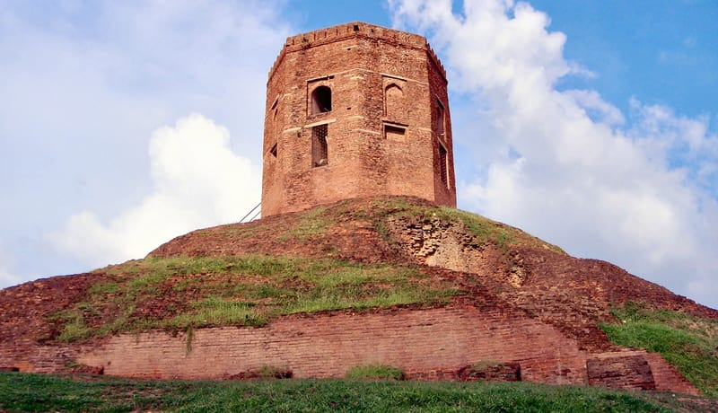Declared as a monument of national importance, this Buddhist structure is called Chaukhandi Stupa because of its square foundation. Archaeologists treasure this site and have excavated artifacts dating back to the reign of Gupta rulers. In fact, the origin of this monument dates back to the early 5th century when it was believed to be a temple. However, it was later renovated by the son of King Todarmal, who added an octagonal tower on the stupa.
Built out of red bricks atop an earthen mound, this landmark is an eminent heritage site. Legends say that after attaining enlightenment, Lord Buddha travelled to Sarnath and reunited with his companions at this very place. The ruin-like appearance of this monument, in the setting of shaven grass, makes it perfect for photography.
Distance from Varanasi: 9.7 Km
Best Time to Visit: October to March
13. ALAMGIR MOSQUE
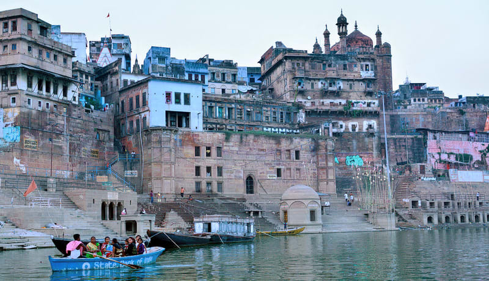Humans have eventually provided their reverence, a new richer meaning, simpler and more precise language in the forms of shrines. This has enabled every single being to have the accessibility of that divine source. With such words, we can aptly describe the exquisite shrine named Alamgir Mosque. This mosque is located near Panchganga Ghat and is amongst the top religious attractions of Varanasi. On the bank of the Ganges, this 17th-century monument stands tall and glorious.
This mosque is also known as “Beni Madha Ka Darera” and “Aurangzeb’s Mosque” from the fact that Emperor Aurangzeb built it. It has 2 minarets and 3 domes that gives its structure a distinguishable and magnificent outlook. But a tragedy in 1948 demolished a few portions of the mosque, which is now being guarded and preserved by our government. A perfect amalgamation of evening sunset near the giant mosque and the water gushing out from the fountains in the garden, one can absorb the best of nature at this site.
Distance from Varanasi: 5.6 Km
Best Time to Visit: October
14. ST. MARY's Church
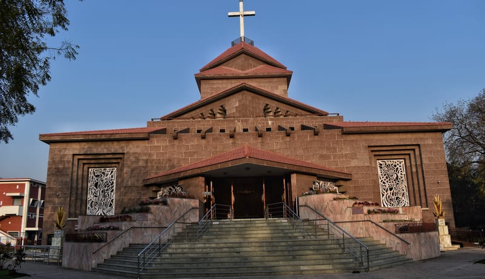St. Mary’s Church is a two hundred years old cathedral constructed by Reverend George Wheatley. It has a projecting portico and a spire and in place of windows it has louvered doors, and hooded ventilation. It is renowned for its amazing architecture and in 1960 even Queen Elizabeth II visited the church to witness its architectural marvelousness. Hence, due to its glorious history, it is locally referred to as the 'Church of England.'
Despite its old construction, the structure is well maintained and alluring and many Anglo Indians and tourists frequent it every year to gasp into its glory. Every Christmas, the church is illuminated with fairy lights, and Christmas carols are sung in celebration. If exploring the city on a tight schedule, St. Mary's Church is surely one of the places that should be on your bucket list.
Distance from Varanasi: 3.9 Km
Best Time to Visit: Sundays and Christmas
15. DASASHWAMEDH GHAT
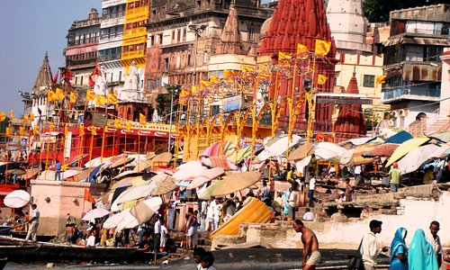Dashashwamedh Ghat is known for conducting the liveliest aartis along the holy river Ganga to immerse the visitors into divine bliss. A prominent member of the tourist attractions in Varanasi, Dashashwamedh Ghat, got its name due to the legend of Lord Brahma sacrificing 10 horses, or das Ashwamedh, in order to perform a yajna. Every sunset, the ghat gets illuminated by the light of diyas lit to commence the sacred rituals.
Priests gather and chant prayers in unison as they move the diyas in circles and pay their obeisance to the god. A huge crowd gathers to participate in this ceremony. The refreshing aura that sets in during the evening witnesses hundreds of tourists thronging the ghat to relax on the steps leading to the river waters. You can also spot many boats floating in the river. Due to the divine ambiance and religious significance, it is a must amongst the places to visit in Varanasi in 2 days.
Distance from Varanasi: 5.5 Km
Best Time to Visit: Kartik Purnima
16. ASSI GHAT
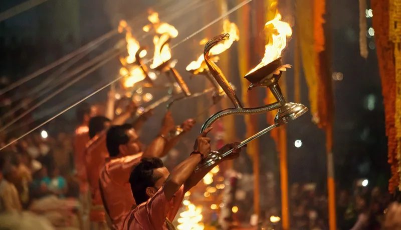Another name amongst the unmissable places to visit in Varanasi is Assi Ghat. Frequented by college-goers and tourists alike, this ghat offers a peaceful escape from the hustle and bustle of Varanasi's chaotic lanes. Pilgrims bathe in the holy waters of River Assi and offer flowers to the Shivlinga before resting on the steps of the ghat.
Ancient texts claim it to be the place where the revered saint and poet, Tulsidas, retired before his death. You can relax under the shade of peepal trees lining the shore, or take a boat ride to witness the panoramic sunsets. Every day, at the break of the dawn, the ghat is crowded by devotees chanting prayers as the priests light the diyas and perform the ceremonial aarti.
Distance from Varanasi: 7.2. Km
Best Time to Visit: Shivratri
17. MANIKARNIKA GHAT
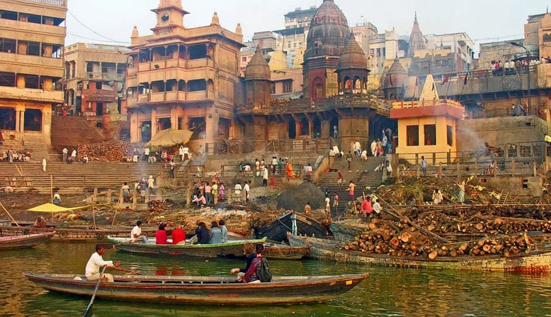Many legends surround the etymology behind Manikarnika Ghat, the oldest riverfront and one of the most religious tourist attractions in Varanasi. Mentioned in many ancient scriptures and religious texts, Manikarnika ghat is said to be the place where Devi Sati set herself on fire and also the birthplace of the fearless queen of Jhansi, Rani Lakshmibai.
Temples of many Hindu deities surround its periphery while the holy waters of river Ganga flow peacefully alongside. Giving a peek into the traditional life of Varanasi, this place is visited every year by thousands of pilgrims performing the last rites of their departed loved ones. A holy well, believed to be dug by Lord Shiva to recover the fallen earring of Goddess Sati, is present at the top of the stairs.
Distance from Varanasi: 5.5 Km
Best Time to Visit: Summer season, from March to June
18. SHIVALA GHAT
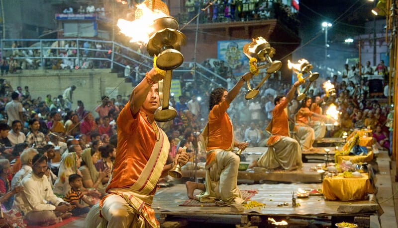Another prominent riverfront in this pilgrimage city is Shivala Ghat. Surrounded by historical landmarks and some of the most intriguing places to visit in Varanasi, this ghat is visited by photography lovers who wish to capture the captivating vistas of sunrise and sunset.
Also known as Kali Ghat, this site is often visited by localities who perform their morning prayers or take a dip in the holy water of River Ganga. On one side, you can spot the charming fortress of Oudh's Nawab's representative Chet Singh. While on the other side, you can spot the 19th-century exquisite mansion of Nepali royal, King Sanjay Vikram Singh. Tourists here enjoy resting peacefully near the banks and taking a boat ride in the tranquil river.
Distance from Varanasi: 6.2 Km
Best Time to Visit: Shivratri
19. MANMANDIR GHAT
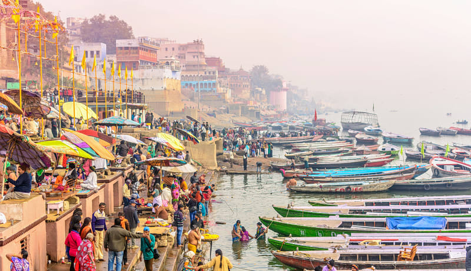This ancient yet beautiful ghat was built more than 400 years ago by Maharaja Man Singh. He also constructed an enormous palace on banks of the ghat, which is admired by countless architects around the world. The Jantar Mantar on the top adds a scientific layer to the ghat, which makes it stand out. Jam-packed with Hindu mandirs, the ghat is known to be a heaven for Hindu deities’ worshippers.
The ravishing views, especially during dawn and dusk, will give you a reason to stick around longer than usual. Situated on the banks of river Ganga, it is one of the most beautiful places not only in Varanasi but in entire India.
Distance from Varanasi: 5.3 Km
Best Time to Visit: Early Morning
20. TULSI GHAT
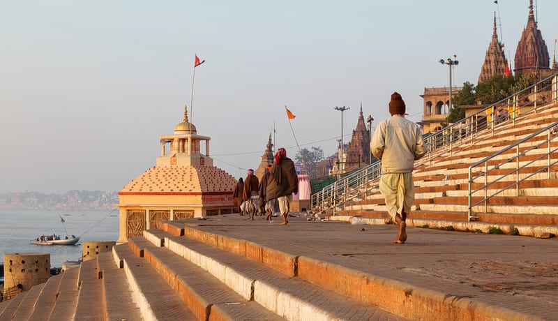Tulsi Ghat is an important landmark where Tulsidas created the holy version of ramcharitmanas and it should be one of the must visit places in Varanasi in 2 days. Located on the banks of River Ganga, it is a member of the chain of ghats present in Varanasi. But what makes it stand apart amongst the other riverfronts is its historical legend and religious significance.
Named after the Hindu poet Tulsidas, stories claim this to be the place where he lived while he was working on the Awadhi version of the Hindu epic Ramayana. Pilgrims gather in thousands to wash away their sins by taking a dip in the blessed waters of Ganga. The waters are also said to have healing powers to cure skin diseases and leprosy. An annual festival called Lolark Sasthi sees huge masses gathered at the ghat to worship Lord Rama and pray to be blessed with a son.
Distance from Varanasi: 6.7 Km
Best Time to Visit: Lolark Sasthi, Kartik Month
21. DARBHANGA GHAT
In a city brimful of ghats, the Darbhanga Ghat stands out due to its rich heritage and an amazing palace situated near the bank. A royal family from Darbhanga named the ghat on themselves and erected the magnificent palace with sandstone from Chunar. It is one of its kinds when it comes to architectural grandeur.
Set amongst other ghats such as Dashashwamedh ghat and Ranamahal ghat, it is a popular choice for many religious events. What makes Darbhanga Ghat the best place to visit in Varanasi is the gigantic Shivalinga which is known to fulfill your wishes.
Distance from Varanasi: 5.5 Km
Best Time to Visit: All Year
22. SCINDIA GHAT
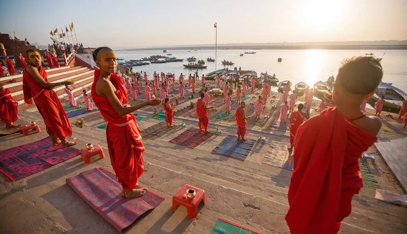Revered as one of the best ghats in Varanasi Scindia Ghat is an important pilgrimage spot for the Hindus. It was built by Baija Bai in 1850, and it is believed that the Lord of fire, Agni, was born here. Located near Ghasi Tola, this ghat houses a Shiva temple that is partially submerged in the water. It is believed that the idol of Lord Shiva is sinking continuously, and in a few years, it will be completely submerged under the water.
You can also find the saints meditating over here to attain peace and tranquility. The alleyway of the ghat is known to be the hideout of a number of important temples of Varanasi. There is a popular belief that people who pray with full faith in this ghat are blessed with a son.
Distance from Varanasi: 5.6 Km
Best Time to Visit: Morning
23. HARISHCHANDRA GHAT
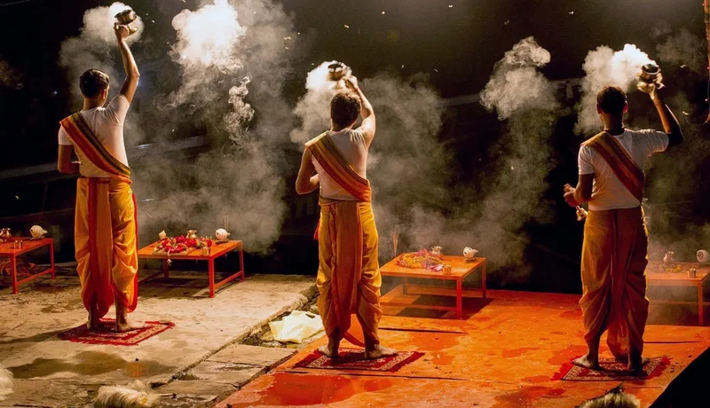This is known to be the cremation Ghat of Varanasi and has been named after King Harishchandra, who is known to be the symbol of charity and truth. This is one of the oldest ghats of Varanasi where sandhya aarti takes place with complete fervor and joy. According to a popular belief, he prayed at this cremation center, and God rewarded him for his truthfulness and determination by giving him back his lost throne and dead son.
Followers of Hinduism bring the body of their loved ones from distant places to this ghat as it is believed that if you perform their last rights here, they will get salvation. This ghat is also known as Adi Manikarnika and is a legendary site for the Hindus. An electric crematorium was opened at this ghat in the 1980s in order to modernize the ghat.
Distance from Varanasi: 5.9 Km
Best Time to Visit: Morning, Evening
24. LALITA GHAT
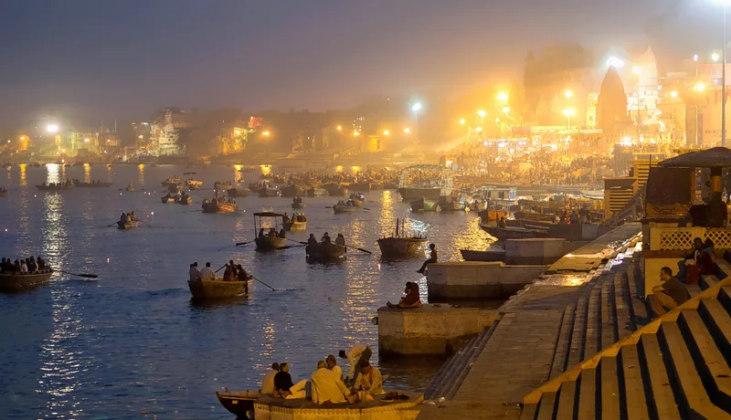This is one of the most famous ghats in Varanasi that is located on the banks of the holy river Ganga. The long stretch from Raj Rajeshwari Ghat to Vishnu Ghat is known as Lalita Ghat, and it is dotted with some of the most famous temples in the world. It has been named after the Hindu Goddess Lalita and is revered to be the center of spiritual belief and enlightenment. Nepalese king Rana Bahadur Singh built it in the 19th century, and it is known to be one of the most venerated Ghats of Varanasi.
The ghat houses Lalita Gauri Mandir, Lord Vishnu’s Ganga Keshava shrine, and a Nepali Mandir. The Nepali Mandir is a typical Kathmandu-style temple that houses the image of Pashupateshvara and also sports an intricate selection of erotic carvings. Devotees from different parts of the world throng into this ghat to take the holy dip in river Ganga.
Distance from Varanasi: 5.9 Km
Best Time to Visit: Morning
25. AHILYABAI GHAT
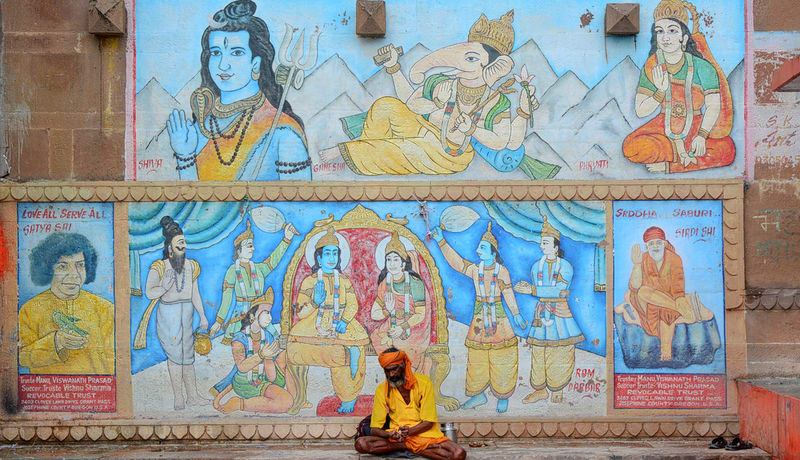This is also known as burning ghat, as this is the spot where most of the dead bodies are cremated in the holy land of Varanasi. It is believed that if the last rituals of those who have died are performed here then it will liberate them from the neverending cycle of rebirth and death. The shore of the ghat is lined by piles of firewood and you can even see the fires burning here with the cremation of the dead bodies.
If you’re an enthusiastic and curious soul, then you can watch the cremation taking place over here for free. The doms who’re believed to be the cast of untouchables are known to supervise the burning ghat. Many priests are also present on this ghat to carry out the cremation ritual of those who have died and wish to seek salvation.
Distance from Varanasi: 5.4 Km
Best Time to Visit: Morning
26. RANA MAHAL GHAT
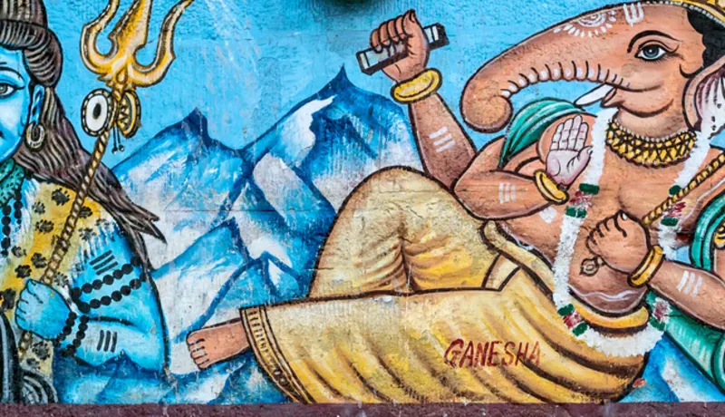Located on the southern end of Dashaswamedh Ghat Rana Mahal Ghat was built in 1970 by a Rajput Chieftain and Maharana of Udaipur. It is known to be the home to some of the most grandiose palaces that exhibit the splendid form of Rajputana architecture. These palaces started losing their charm with time, and therefore, the Rana Jagat Singh ordered to renovate these palaces to restore their ethereal beauty.
This ghat is believed to be a haunted site, and therefore, the devotees refrain from visiting this ghat during the night. During the morning, the ghat is in its full splendor, and you can see here the saints praying and the people meditating to attain peace.
Distance from Varanasi: 5.4 Km
Best Time to Visit: Morning, but not at night
27. CAUSATTHI GHAT
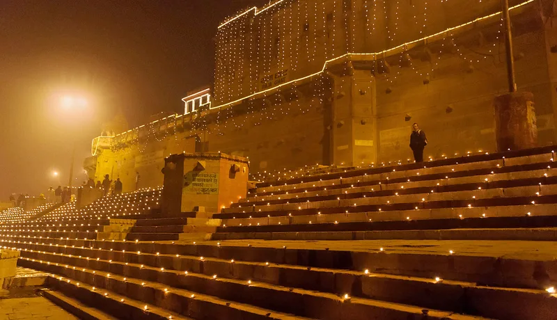This is one of the most famous Ghats in Varanasi that attracts a huge number of devotees every year due to its religious significance. It has been named after Chausath Yogini Temple, which enshrines the statues of sixty-four ‘yoginis’ who are known to be the lady assistants of Kali. The ghat is known to be invaded by Madhusudana Saraswati, who was a great Sanskrit scholar.
The king of Udaipur renovated this Ghat in 1670 in order to enhance the beauty and overall appeal of this ghat. In the month of Chaitra, a huge number of devotees visit this ghat and take a dip in the holy river of Ganga and offer a symbolic offering to their ancestors.
Distance from Varanasi: 6.6 Km
Best Time to Visit: Chaitra, Holi
28. PANCHGANGA GHAT
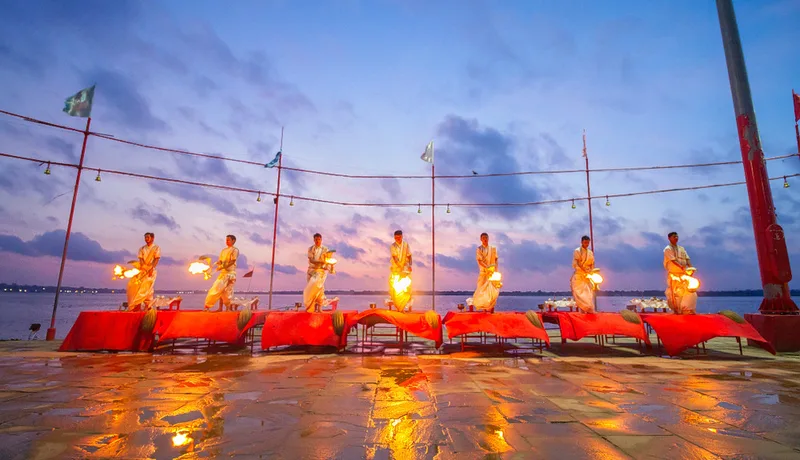This ghat has got its name from the confluence of five major rivers Yamuna, Saraswati, Dhutpapa, Kirana, and the Ganges. Devotees from all across the world gather here to take a dip in the holy river Ganga. The ghat is very deep and broad, and the turrets and stairs of the ghats are made of stone.
The Mosque of Alamgir is located close to the ghat, which was built by Aurangzeb after destroying the Bindu Madhava temple that stood in place of the mosque. This ghat also bears testimony to the Hindu-Muslim relations as it is revered to be the site of the initiation of Sufi-Sant tradition.
Distance from Varanasi: 5.6 Km
Best Time to Visit: Kartika (October-November)
29. KEDAR GHAT
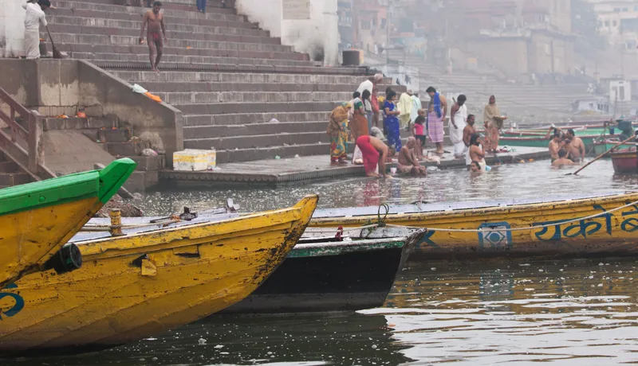A lesser-known name amongst the 88 riverfronts spread across the city, Kedar Ghat is frequented by hundreds of people every day who come to pray to the holy river Ganga. With steps descending to the bank of the placed river, this ghat provides a mellow spot for sitting and relaxing while looking at the distant sun.
Every visitor of this ghat stops to pay their obeisance at the petite temple settled here. Covered in stripes of red and white, this temple houses an elegant effigy of Kedareshwara. This is also the reason why this ghat is linked mythologically to Kedarnath. After taking a dip in the sacred water of Ganges, you can also enjoy a boat ride from the shore.
Distance from Varanasi: 5.8 Km
Best Time to Visit: July and August